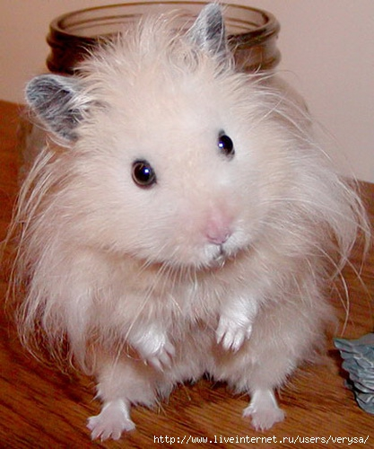
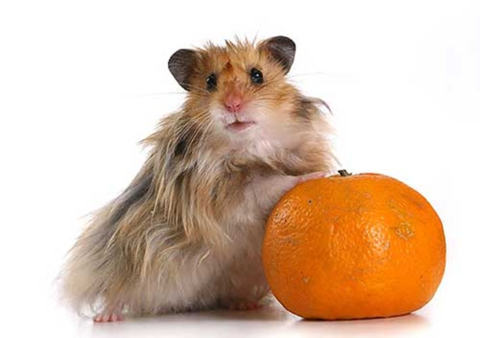

 Домашние хомячки, относящиеся к семейству грызунов, - наверное, самые популярные домашние животные из всех представителей грызунов. Домашние хомячки симпатичные, чистоплотные и неприхотливые в уходе. Домашние хомячки при правильном уходе будут радовать своих владельцев каждый день. Омрачает только то, что живут домашние хомячки в неволе максимум года три или четыре. В зоомагазинах сейчас продают несколько видов домашних хомячков. Всего их четыре разновидности: - джунгарский хомячок; - сирийский хомячок; - обыкновенный хомячок; - хомячок роборовского.
Ни одному человеку не понравится сидеть взаперти в тесном помещении, где невозможно встать в полный рост или подвигаться. Хомячки – тоже живые существа, и тесные клетки придутся им не по нраву. Самое главное, что всегда нужно помнить, это то, что клетка для домашнего хомячка должна быть достаточно просторной. В ней всегда должно быть сухо и чисто. Некоторые помещают хомячков жить не в клетки, а в аквариумы или в банки – такое жилье вряд ли понравится вашему питомцу. Он постоянно будет соскальзывать по стеклу, да и места побегать у него будет меньше. Очень хорошо, если у хомяка есть возможность подвигаться и побегать по своему домику. В таком случае значительно снижается риск паралича. В связи с этим надо определяться с покупкой либо строительством комфортного жилья для хомячка, свободной площади которого хватит для его активности. Отличное приспособление для компенсации двигательной активности домашнего хомячка – это специальное беговое колесо.

Домик для хомячка из дерева лучше не покупать. Хомяк просто-напросто может его со временем прогрызть и убежать.
Зоомагазины предлагают огромное количество разнообразных домов-клеток для домашних хомячков. Такие клетки представляют собой обычные клетки из проволоки, клетки большого размера со специальной постелькой для хомячка, клетки с различными беговыми колесами и туннелями и т.д. Определяясь с домом для своего хомячка надо просто подумать, где будет уютнее и комфортнее хомячку.
В клетке должно находиться: миски для еды и питья, кроватка для хомяка. Пол клетки можно устилать опилками, соломой или кусочками бумаги. Главное – регулярно чистить клетку и все находящиеся в ней предметы.
Чем кормить домашнего хомячка
Домашние хомячки могут есть практически все продукты, которые ест сам человек и которые можно найти и купить где угодно. Хомячки обожают капусту, морковь, свеклу и другие овощи, а также свежие фрукты: яблоки, груши, бананы. Можно давать и сухофрукты: изюм, курагу, чернослив. Семена и коренья растений тоже придутся по вкусу маленькому питомцу. А вот от цитрусовых хомяк, скорее всего, откажется.
В зоомагазинах есть огромное количество специальных сбалансированных кормов для домашних хомячков. В корма включаются зерна кукурузы, семечки подсолнуха, разнообразные зерна и т.п. Так как домашние хомячки животные не капризные, то проблем с кормлением, как правило, не возникает.Уход за домашними хомячками
Хомячки – животные симпатичные, но могут и кусаться. Их, конечно, довольно просто приручить, но обращаться с ними необходимо все равно по особенному. Если хомячок не ручной и часто кусает своих хозяев, можно надевать на руку перчатку. Главное - постараться не испугать хомячка. Как правило, хомячки проявляют агрессию и кусаются, когда им страшно или у них стресс.
Держать хомячка в руке надо осторожно, положив ладонь под животик. Всегда помните, что хомячки – животные очень верткие и активные. Вы не успеете и глазом моргнуть, а хомячок уже выскользнет из руки и убежит.
Если вы захотели выпустить хомячка погулять по комнате, то лучше предварительно заткнуть все щели, куда он может залезть. Если хомяку удалось залезть в щель, то достать его оттуда бывает сложновато.